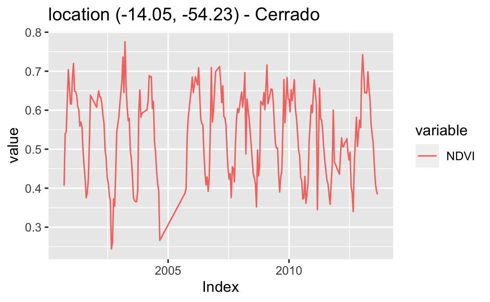
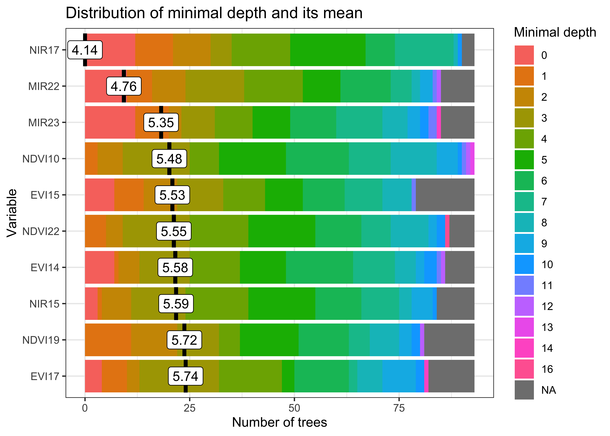
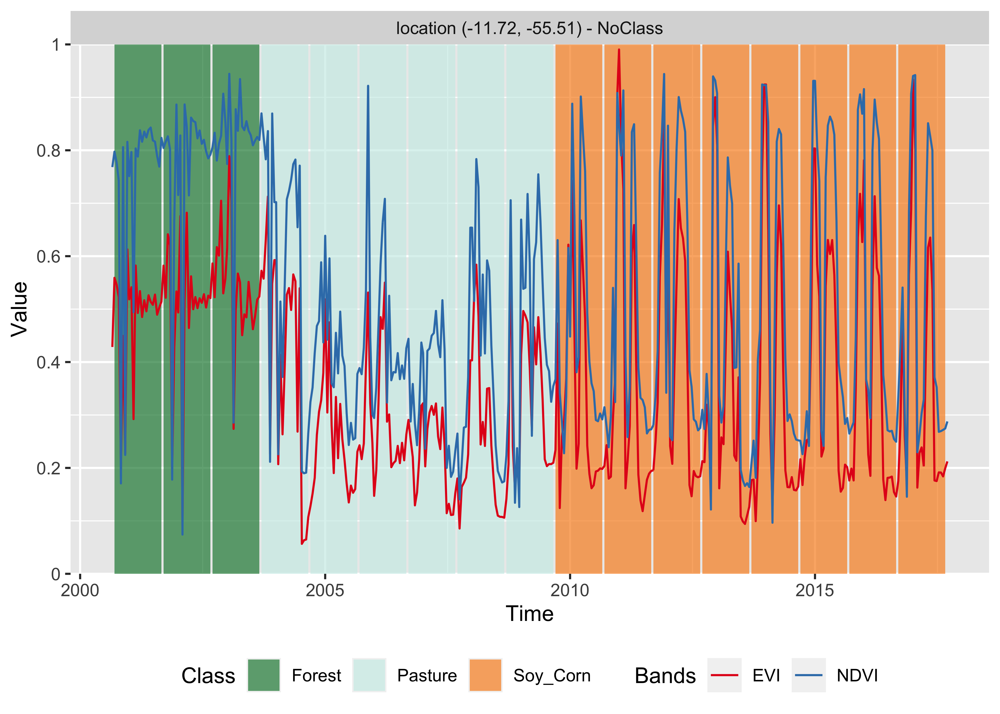
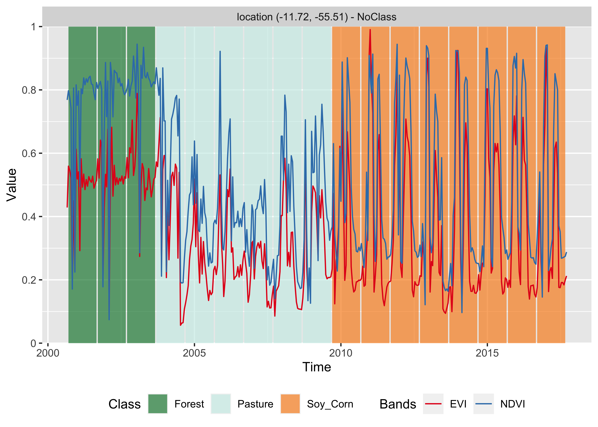

Chapter 3 Working with time series
Data structures for satellite time series

The sits package requires a set of time series data, describing properties in spatiotemporal locations of interest. For land use classification, this set consists of samples provided by experts that take in-situ field observations or recognize land classes using high-resolution images. The package can also be used for any type of classification, provided that the timeline and bands of the time series (used for training) match that of the data cubes.
For handling time series, the package uses a tibble to organize time series data with associated spatial information. A tibble is a generalization of a data.frame, the usual way in R to organize data in tables. Tibbles are part of the tidyverse, a collection of R packages designed to work together in data manipulation [1]. The following code shows the first three lines of a tibble containing \(1,882\) labeled samples of land cover in Mato Grosso state of Brazil. The samples contain time series extracted from the MODIS MOD13Q1 product from 2000 to 2016, provided every \(16\) days at \(250\)-meter resolution in the Sinusoidal projection. Based on ground surveys and high-resolution imagery, it includes samples of nine classes: “Forest”, “Cerrado”, “Pasture”, “Soy_Fallow”, “Fallow_Cotton”, “Soy_Cotton”, “Soy_Corn”, “Soy_Millet”, and “Soy_Sunflower”.
# data set of samples
data("samples_matogrosso_mod13q1")
samples_matogrosso_mod13q1[1:3, ]#> # A tibble: 3 × 7
#> longitude latitude start_date end_date label cube time_series
#> <dbl> <dbl> <date> <date> <chr> <chr> <list>
#> 1 -57.8 -9.76 2006-09-14 2007-08-29 Pasture bdc_cube <tibble [23 × 5]>
#> 2 -59.4 -9.31 2014-09-14 2015-08-29 Pasture bdc_cube <tibble [23 × 5]>
#> 3 -59.4 -9.31 2013-09-14 2014-08-29 Pasture bdc_cube <tibble [23 × 5]>A sits tibble contains data and metadata. The first six columns contain the metadata: spatial and temporal information, the label assigned to the sample, and the data cube from where the data has been extracted. The spatial location is given in longitude and latitude in WGS84 coordinates. The first sample has been labeled “Pasture” at location (-58.5631, -13.8844) and is considered valid for the period (2007-09-14, 2008-08-28). Informing the dates where the label is valid is crucial for correct classification. In this case, the researchers involved in labeling the samples chose to use the agricultural calendar in Brazil, where the spring crop is planted in the months of September and October, and the autumn crop is planted in the months of February and March. For other applications and other countries, the relevant dates will most likely be different from those used in the example. The time_series column contains the time series data for each spatiotemporal location. This data is also organized as a tibble, with a column with the dates and the other columns with the values for each spectral band.
Utilities for handling time series
The package provides functions for data manipulation and displaying information for sits tibble. For example, sits_labels_summary() shows the labels of the sample set and their frequencies.
sits_labels_summary(samples_matogrosso_mod13q1)#> # A tibble: 9 × 3
#> label count prop
#> <chr> <int> <dbl>
#> 1 Cerrado 379 0.200
#> 2 Fallow_Cotton 29 0.0153
#> 3 Forest 131 0.0692
#> 4 Pasture 344 0.182
#> 5 Soy_Corn 364 0.192
#> 6 Soy_Cotton 352 0.186
#> 7 Soy_Fallow 87 0.0460
#> 8 Soy_Millet 180 0.0951
#> 9 Soy_Sunflower 26 0.0137In many cases, it is helpful to relabel the data set. For example, there may be situations when one wants to use a smaller set of labels, since samples in one label on the original set may not be distinguishable from samples with other labels. We then could use sits_relabel(), which requires a conversion list (for details, see ?sits_relabel).
Given that we have used the tibble data format for the metadata and the embedded time series, one can use the functions from dplyr, tidyr, and purrr packages of the tidyverse [1] to process the data. For example, the following code uses sits_select() to get a subset of the sample data set with two bands (NDVI and EVI) and then uses the dplyr::filter() to select the samples labelled as “Cerrado”.
# select NDVI band
samples_ndvi <- sits_select(samples_matogrosso_mod13q1,
bands = "NDVI"
)
# select only samples with Cerrado label
samples_cerrado <- dplyr::filter(samples_ndvi, label == "Cerrado")Time series visualisation
Given a small number of samples to display, plot() tries to group as many spatial locations together. In the following example, the first 12 samples of “Cerrado” class refer to the same spatial location in consecutive time periods. For this reason, these samples are plotted together.
# plot the first 12 samples
plot(samples_cerrado[1:12, ])
Figure 3.1: Plot of the first ‘Cerrado’ sample
For a large number of samples, where the number of individual plots would be substantial, the default visualization combines all samples together in a single temporal interval (even if they belong to different years). All samples with the same band and label are aligned to a common time interval. This plot is useful to show the spread of values for the time series of each band. The strong red line in the plot shows the median of the values, while the two orange lines are the first and third interquartile ranges. The documentation of plot.sits() has more details about the different ways it can display data.
# plot all cerrado samples together
plot(samples_cerrado)
Figure 3.2: Plot of all Cerrado samples
Obtaining time series data from data cubes
To get a time series in sits, one has to first create a regular data cube and then request one or more time series points from the data cube by using sits_get_data(). This function provides a general means of describe training data with the samples parameter. This parameter accepts the following data types:
- A data.frame with information on latitude and longitude (mandatory), start_date, end_date and label for each sample point.
- A csv file with columns latitude and longitude, start_date, end_date and label.
- A shapefile containing either POINT or POLYGON geometries. See details below.
- An
sfobject (from thesfpackage) with POINT or POLYGON geometry information. See details below.
In the example below, given a data cube the user provides the latitude and longitude of the desired location. Since the bands, start date and end date of the time series are not informed, sits obtains them from the data cube. The result is a tibble with one time series that can be visualized using plot().
# Obtain a raster cube with based on local files
data_dir <- system.file("extdata/sinop", package = "sitsdata")
raster_cube <- sits_cube(
source = "BDC",
collection = "MOD13Q1-6",
data_dir = data_dir,
parse_info = c("X1", "X2", "tile", "band", "date")
)
# obtain a time series from the raster cube from a point
sample_latlong <- tibble::tibble(
longitude = -55.57320,
latitude = -11.50566
)
series <- sits_get_data(
cube = raster_cube,
samples = sample_latlong
)
plot(series)
Figure 3.3: NDVI and EVI time series fetched from local raster cube.
A useful case is when a set of labelled samples are available to be used as a training data set. In this case, one usually has trusted observations that are labelled and commonly stored in plain text files in comma-separated values (CSV) or using shapefiles (SHP).
# retrieve a list of samples described by a CSV file
samples_csv_file <- system.file("extdata/samples/samples_sinop_crop.csv",
package = "sits"
)
# for demonstration, read the CSV file into an R object
samples_csv <- read.csv(samples_csv_file)
# print the first three lines
samples_csv[1:3, ]#> id longitude latitude start_date end_date label
#> 1 1 -55.65931 -11.76267 2013-09-14 2014-08-29 Pasture
#> 2 2 -55.64833 -11.76385 2013-09-14 2014-08-29 Pasture
#> 3 3 -55.66738 -11.78032 2013-09-14 2014-08-29 ForestTo retrieve training samples for time series analysis, users need to provide the temporal information (start_date and end_date). In the simplest case, all samples share the same dates. That is not a strict requirement. Users can specify different dates, as long as they have a compatible duration. For example, the data set samples_matogrosso_mod13q1 provided with the sitsdata package contains samples from different years covering the same duration. These samples were obtained from the MOD13Q1 product, which contains the same number of images per year. Thus, all time series in the data set samples_matogrosso_mod13q1 have the same number of instances.
Given a suitably built CSV sample file, sits_get_data() requires two parameters: (a) cube, the name of the R object that describes the data cube; (b) samples, the name of the CSV file.
# get the points from a data cube in raster brick format
points <- sits_get_data(
cube = raster_cube,
samples = samples_csv_file
)
# show the tibble with the first three points
points[1:3, ]#> # A tibble: 3 × 7
#> longitude latitude start_date end_date label cube time_series
#> <dbl> <dbl> <date> <date> <chr> <chr> <list>
#> 1 -55.8 -11.7 2013-09-14 2014-08-29 Cerrado MOD13Q1-6 <tibble [23 × 3]>
#> 2 -55.8 -11.7 2013-09-14 2014-08-29 Cerrado MOD13Q1-6 <tibble [23 × 3]>
#> 3 -55.7 -11.7 2013-09-14 2014-08-29 Soy_Corn MOD13Q1-6 <tibble [23 × 3]>Users can also specify samples by providing shapefiles or sf objects containing POINT or POLYGON geometries. The geographical location is inferred from the geometries associated with the shapefile or sf object. For files containing points, the geographical location is obtained directly. For polygon geometries, the parameter n_sam_pol (defaults to 20) determines the number of samples to be extracted from each polygon. The temporal information can be provided explicitly by the user; if absent, it is inferred from the data cube. If label information is available in the shapefile or sf object, users should include the parameter label_attr to indicate the column which contains the label to be associated with each time series.
# obtain a set of points inside the state of Mato Grosso, Brazil
shp_file <- system.file("extdata/shapefiles/mato_grosso/mt.shp",
package = "sits"
)
# read the shapefile into an "sf" object
sf_shape <- sf::st_read(shp_file)#> Reading layer `mt' from data source
#> `/Library/Frameworks/R.framework/Versions/4.2/Resources/library/sits/extdata/shapefiles/mato_grosso/mt.shp'
#> using driver `ESRI Shapefile'
#> Simple feature collection with 1 feature and 3 fields
#> Geometry type: POLYGON
#> Dimension: XY
#> Bounding box: xmin: -61.63338 ymin: -18.0416 xmax: -50.22481 ymax: -7.349028
#> Geodetic CRS: SIRGAS 2000# create a data cube based on MOD13Q1 collection from BDC
modis_cube <- sits_cube(
source = "BDC",
collection = "MOD13Q1-6",
roi = sf_shape,
bands = c("NDVI", "EVI"),
start_date = "2020-06-01", end_date = "2021-08-29"
)
# read the points from the cube and produce a tibble with time series
samples_mt <- sits_get_data(
cube = modis_cube,
samples = shp_file,
start_date = "2020-06-01", end_date = "2021-08-29",
n_sam_pol = 20, multicores = 4
)Filtering techniques for time series
Satellite image time series generally is contaminated by atmospheric influence, geolocation error, and directional effects [2]. Atmospheric noise, sun angle, interferences on observations or different equipment specifications, as well as the very nature of the climate-land dynamics can be sources of variability [3]. Inter-annual climate variability also changes the phenological cycles of the vegetation, resulting in time series whose periods and intensities do not match on a year-to-year basis. To make the best use of available satellite data archives, methods for satellite image time series analysis need to deal with noisy and non-homogeneous data sets. In this vignette, we discuss filtering techniques to improve time series data that present missing values or noise.
The literature on satellite image time series has several applications of filtering to correct or smooth vegetation index data. The package supports the well-known Savitzky–Golay (sits_sgolay()) and Whittaker (sits_whittaker()) filters. In an evaluation of MERIS NDVI time series filtering for estimating phenological parameters in India, [3] found that the Whittaker filter provides good results. [4] found that the Savitzky-Golay filter is good for reconstruction in tropical evergreen broadleaf forests.
Savitzky–Golay filter
The Savitzky-Golay filter works by fitting a successive array of \(2n+1\) adjacent data points with a \(d\)-degree polynomial through linear least squares. The main parameters for the filter are the polynomial degree (\(d\)) and the length of the window data points (\(n\)). In general, it produces smoother results for a larger value of \(n\) and/or a smaller value of \(d\) [5]. The optimal value for these two parameters can vary from case to case. In SITS, the user can set the order of the polynomial using the parameter order (default = 3), the size of the temporal window with the parameter length (default = 5), and the temporal expansion with the parameter scaling (default = 1). The following example shows the effect of Savitsky-Golay filter on a point extracted from the MOD13Q1 product, ranging from 2000-02-18 to 2018-01-01.
# Take NDVI band of the first sample data set
point_ndvi <- sits_select(point_mt_6bands, band = "NDVI")
# apply Savitzky Golay filter
point_sg <- sits_sgolay(point_ndvi, length = 11)
# merge the point and plot the series
sits_merge(point_sg, point_ndvi) %>% plot()
Figure 3.4: Savitzky-Golay filter applied on a multi-year NDVI time series.
Notice that the resulting smoothed curve has both desirable and unwanted properties. For the period 2000 to 2008, the Savitsky-Golay filter removes noise resulting from clouds. However, after 2010, when the region has been converted to agriculture, the filter removes an important part of the natural variability from the crop cycle. Therefore, the length parameter is arguably too big and results in oversmoothing. Users can try to reduce this parameter and analyse the results.
Whittaker filter
The Whittaker smoother attempts to fit a curve that represents the raw data, but is penalized if subsequent points vary too much [6]. The Whittaker filter is a balancing between the residual to the original data and the “smoothness” of the fitted curve. The filter has one parameter: \(\lambda{}\) that works as a “smoothing weight” parameter.
The following example shows the effect of Whitakker filter on a point extracted from the MOD13Q1 product, ranging from 2000-02-18 to 2018-01-01. The lambda parameter controls the smoothing of the filter. By default, it is set to 0.5, a small value. For illustrative purposes, we show the effect of a larger smoothing parameter.
# Take NDVI band of the first sample data set
point_ndvi <- sits_select(point_mt_6bands, band = "NDVI")
# apply Whitakker filter
point_whit <- sits_whittaker(point_ndvi, lambda = 8)
# merge the point and plot the series
sits_merge(point_whit, point_ndvi) %>% plot()
Figure 3.5: Whittaker filter applied on a one-year NDVI time series.
In the same way as what is observed in the Savitsky-Golay filter, high values of the smoothing parameter lambda produce an over-smoothed time series that reduces the capacity of the time series to represent natural variations on crop growth. For this reason, low smoothing values are recommended when using the sits_whittaker function.